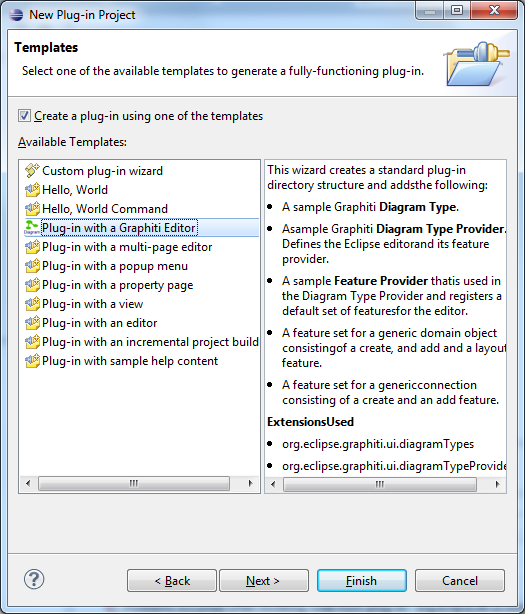

This wizard has been introduced with Graphiti 0.9.0 and allows the creation of a new Eclipse plug-in project containing a basic Graphiti editor. It is integrated in the New Plug-in Project Wizard provided by Eclipse PDE and can be started via File --> New --> Project... --> Plug-in Development --> Plug-in Project. The user can specify the name along with the other settings for the new plug-in project and on the third page of the wizard select the template Plug-in with a Graphiti Editor.
On the next page, the user can change the pre-filled definitions of the Graphiti Diagram Type, Diagram Type Provider and Feature Provider to be created. The initial values proposed there are derived from the name of the plug-in project.

After finishing the wizard a new plug-in is created containing the definitions and basic implementation classes for a new Graphiti diagram editor that allows the creation of new shapes and connections between shapes. The shapes and connections are not yet linked to any domain objects but offer a good starting point for building a real editor. The user may simply start a Eclipse Application as runtime for this and simply create a new Graphiti diagram with the new type by using the Graphiti New Diagram Wizard that comes as part of the examples.